Welcome
I am a PostDoctoral Researcher
at Computer Vision for Human-Computer Interaction (CV:HCI) Lab,
Karlsruhe Institute of Technology (KIT),
Germany,
where I am advised by Prof. Rainer Stiefelhagen.
I recently obtained the PhD degree in Information Sensing and Instrumentation
from Zhejiang University (ZJU),
China.
My PhD research was jointly advised by Prof. Kaiwei Wang
and Prof. Jian Bai
at State Key Laboratory of Modern Optical Instrumentation,
ZJU,
as well as Prof. Luis Miguel Bergasa
at RobeSafe Research Group,
University of Alcalá (UAH),
Spain.
Before my PhD, I obtained the B.S. degree in Measurement Technology and Instrumentation
from Beijing Institute of Technology (BIT)
and the dual degree in Economics
from Peking University (PKU).
Startup
I am Co-founder and Chief Technology Officer
of Hangzhou KR-VISION Technology Co., Ltd.,
a company dedicates to assistive technologies for the visually impaired.
I am also Co-founder and Chief Technology Officer
of Hangzhou SUR-IMAGE Technology Co., Ltd.,
a startup with the aim to develop multi-modal stereo vision sensor for autonomous driving.
Research Interests
My research is in real-time computer vision for intelligent vehicles, robotics, and wearable systems to support real-world navigation of visually impaired pedestrians.
KIT Thesis / Research Exchange
For KIT students / overseas students,
if you are passionate about one of {computer vision, deep learning, image sensing}
and want to apply what you have learned in the area of perception / scene understanding / visual localization / navigation in your thesis
- please send an email to {kailun.yang at kit.edu} with a few sentences about your interests and plans.
Publications
| 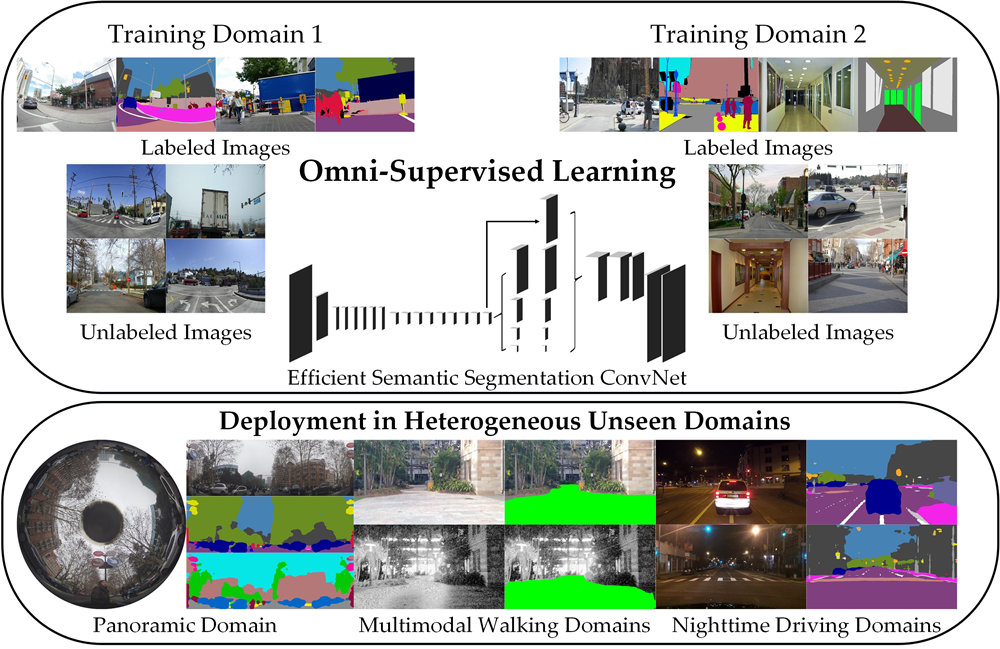 |
K. Yang, X. Hu, K. Wang, R. Stiefelhagen. In Defense of Multi-Source Omni-Supervised Efficient ConvNet for Robust Semantic Segmentation in Heterogeneous Unseen Domains. Submitted to IEEE Intelligent Vehicles Symposium (IV), Las Vegas, United States, June 2020. [DATA+CODE] |
 |
K. Yang, X. Hu, H. Chen, K. Xiang, K. Wang, R. Stiefelhagen. DS-PASS: Detail-Sensitive Panoramic Annular Semantic Segmentation through SwaftNet for Surrounding Sensing. Submitted to IEEE Intelligent Vehicles Symposium (IV), Las Vegas, United States, June 2020. [PDF] [arxiv] [BibTex] [DATA+CODE] |
 |
Y. Fang, K. Wang, R. Cheng, K. Yang. CFVL: A Coarse-to-Fine Vehicle Localizer with Omnidirectional Perception across Severe Appearance Variations Submitted to IEEE Intelligent Vehicles Symposium (IV), Las Vegas, United States, June 2020. [DATA] |
 |
Y. Ye, K. Yang, K. Xiang, J. Wang, K. Wang. Universal Semantic Segmentation for Fisheye Urban Driving Images. Submitted to IEEE Intelligent Vehicles Symposium (IV), Las Vegas, United States, June 2020. [CODE] |
| 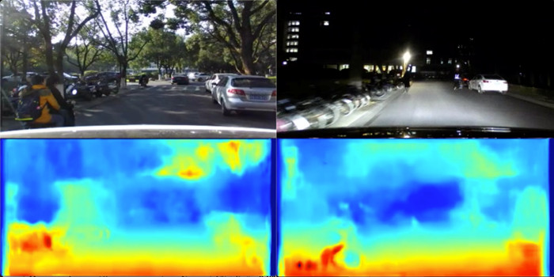 |
K. Zhou, K. Wang, K. Yang. A robust monocular depth estimatiion framework based on light-weight ERF-PSPNet for day-night driving scenes. In International Conference on Graphics, Images and Interactive Techniques (CGIIT), Sanya, China, February 2020. [PDF] [BibTex] |
| 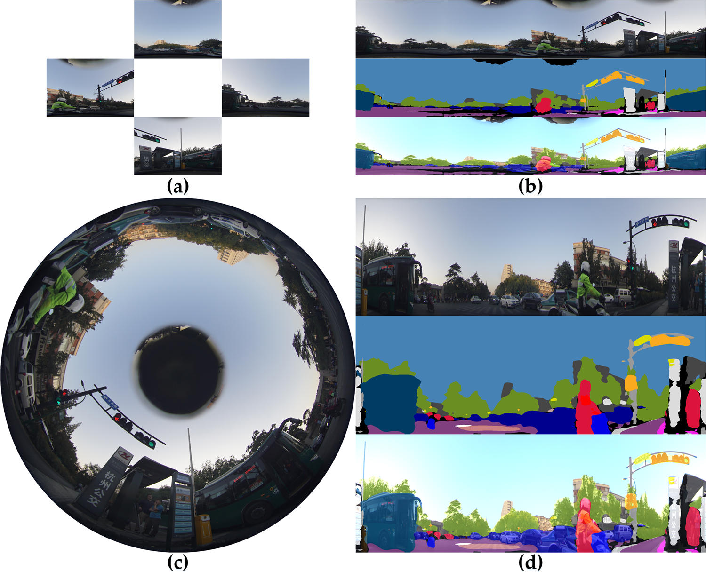 |
K. Yang, X. Hu, L.M. Bergasa, E. Romera, K. Wang. PASS: Panoramic Annular Semantic Segmentation. IEEE Transactions on Intelligent Transportation Systems, 2019. [Early Access] [PDF] [BibTex] [DATA+CODE] |
 |
K. Yang, L.M. Bergasa, E. Romera, K. Wang. Robustifying Semantic Cognition of Traversability across Wearable RGB-Depth Cameras. Applied Optics, 2019. [Highlighted as an Editors' Pick] [PDF] [BibTex] [DATA] [CODE] |
 |
W. Hu, K. Wang, K. Yang, R. Cheng, Y. Ye, L. Sun, C. Wang. A Comparative Study in Real-Time Scene Sonification for Visually Impaired People. Submitted to International Journal of Human-Computer Interaction, 2019. |
 |
W. Hu, K. Wang, H. Chen, R. Cheng, K. Yang. An Indoor Positioning Framework Based on Panoramic Visual Odometry for Visually Impaired People. Measurement Science and Technology, 2019. [PDF] [BibTex] |
| 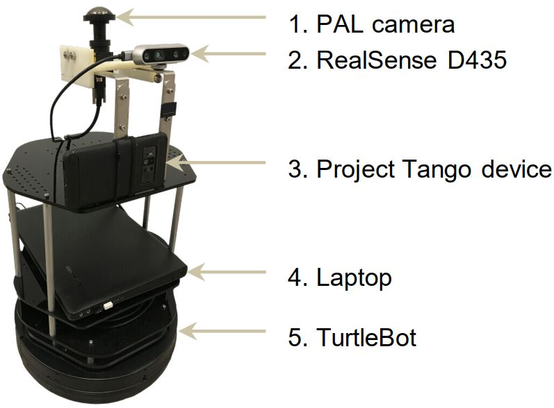 |
H. Chen, K. Wang, W. Hu, K. Yang, R. Cheng, J. Bai. PALVO: Visual odometry based on panoramic annular lens. Optics Express, 2019. [HTML] [PDF] [BibTex] |
 |
H. Li, K. Wang, K. Yang, R. Cheng, C. Wang, L. Fei. Unconstrained Self-Calibration of Stereo Camera on Visually Impaired Assistance Devices. Applied Optics, 2019. [PDF] [BibTex] |
 |
N. Long, K. Wang, R. Cheng, W. Hu, K. Yang. Unifying Obstacle Detection, Recognition and Fusion Based on Millimeter Wave Radar and RGB-Depth Sensors for the Visually Impaired. Review of Scientific Instruments, 2019. [HTML] [PDF] [BibTex] |
 |
N. Long, K. Wang, R. Cheng, K. Yang, W. Hu, J. Bai. Assisting the visually impaired: Multi-target warning through millimeter wave radar and RGB-depth sensors. Journal of Electronic Imaging, 2019. [PDF] [BibTex] |
 |
K. Xiang, K. Wang, K. Yang. Importance-Aware Semantic Segmentation with Efficient Pyramidal Context Network for Navigational Assistant Systems. In IEEE Intelligent Transportation Systems Conference (ITSC), Auckland, New Zealand, October 2019. [PDF] [arxiv] [CODE] [BibTex] |
| 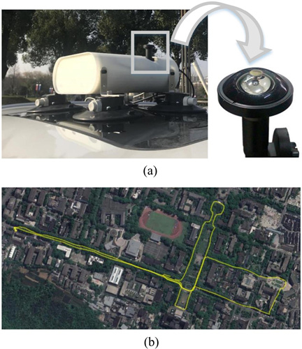 |
R. Cheng, K. Wang, S. Lin, W. Hu, K. Yang, X. Huang, H. Li, D. Sun, J. Bai. Panoramic Annular Localizer: Tackling the Variation Challenges of Outdoor Localization Using Panoramic Annular Images and Active Deep Descriptors. In IEEE Intelligent Transportation Systems Conference (ITSC), Auckland, New Zealand, October 2019. [PDF] [arxiv] [BibTex] [DATA+CODE] |
 |
X. Hu, K. Yang, L. Fei, K. Wang. ACNet: Attention Based Network to Exploit Complementary Feautres for RGBD Semantic Segmentation. In IEEE International Conference on Image Processing (ICIP), Taipei, China, September 2019. [PDF] [arxiv] [BibTex] [CODE] [PaperWeekly] [ZhiHu] [BLOG] |
 |
D. Sun, X. Huang, K. Yang. A Multimodal Vision Sensor for Autonomous Driving. In SPIE Security + Defence Symposium, Strasbourg, France, September 2019. [PDF] [arxiv] [BibTex] [Presentation] [CODE] [BLOG] |
 |
K. Xiang, K. Wang, K. Yang. A Comparative Study of High-Recall Real-Time Semantic Segmentation Based on Swift Factorized Network. In SPIE Security + Defence Symposium, Strasbourg, France, September 2019. [PDF] [arxiv] [BibTex] [Presentation] [CODE] |
| 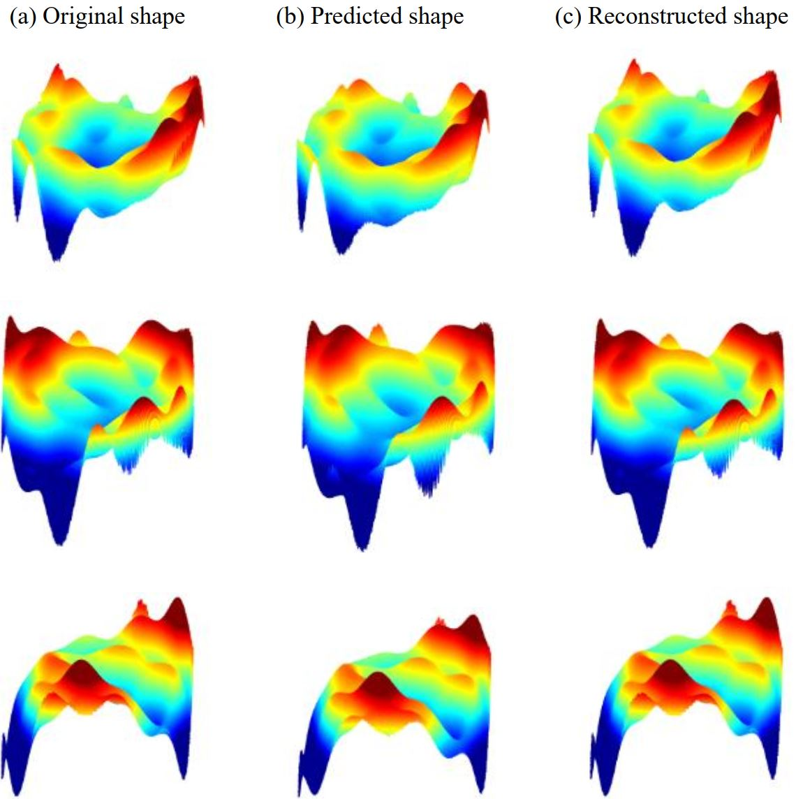 |
J. Wang, J. Bai, X. Huang, X. Zhou, L. Zhao, K. Yan, J. Hou, K. Yang. Transparent object sensing with enhanced prior from deep convolutional neural network. In SPIE Security + Defence Symposium, Strasbourg, France, September 2019. [PDF] [BibTex] [Presentation] |
 |
Y. Xu, K. Wang, K. Yang, D. Sun, J. Fu. Semantic Segmentation of Panoramic Images Using a Synthetic Dataset. In SPIE Security + Defence Symposium, Strasbourg, France, September 2019. [PDF] [arxiv] [BibTex] [Presentation] [VIDEO] [DATA+CODE] |
 |
C. Xu, K. Wang, K. Yang, R. Cheng, J. Bai. Semantic scene understanding on mobile device with illumination invariance for the visually impaired. In SPIE Security + Defence Symposium, Strasbourg, France, September 2019. [PDF] [BibTex] |
 |
L. Sun, K. Wang, K. Yang, K. Xiang. See Clearer at Night: Towards Robust Nighttime Semantic Segmentation through Day-Night Image Conversion. In SPIE Security + Defence Symposium, Strasbourg, France, September 2019. [PDF] [arxiv] [BibTex] [Presentation] [DATA] [CODE] [AITechTalk] |
| 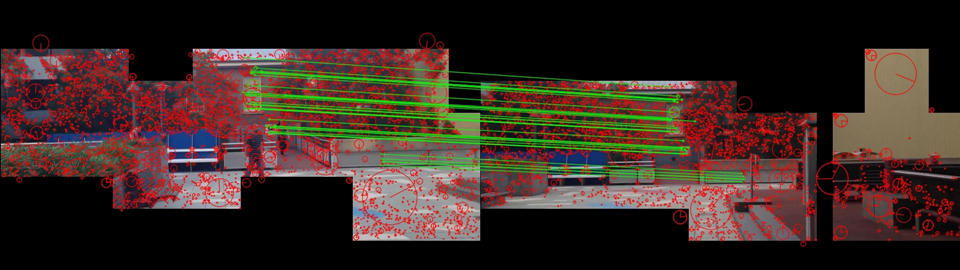 |
Y. Fang, K. Wang, R. Cheng, K. Yang, J. Bai. Visual place recognition based on multi-level descrirptors for the visually impaired people. In SPIE Security + Defence Symposium, Strasbourg, France, September 2019. [PDF] [BibTex] [Presentation] |
 |
J. Shen, K. Wang, K. Yang, K. Xiang, L. Fei, X. Hu, H. Li and H. Chen. A Depth Estimation Framework Based on Unsupervised Learning and Cross-Modal Translation. In SPIE Security + Defence Symposium, Strasbourg, France, September 2019. [PDF] [BibTex] [Presentation] |
 |
K. Yang, X. Hu, L.M. Bergasa, E. Romera, X. Huang, D. Sun, K. Wang. Can we PASS beyond the Field of View? Panoramic Annular Semantic Segmentation for Real-World Surrounding Perception. In IEEE Intelligent Vehicles Symposium (IV), Paris, France, June 2019. [PDF] [BibTex] [VIDEO1] [VIDEO2] [DATA+CODE] [BLOG] |
 |
E. Romera, L.M. Bergasa, K. Yang, J.M. Álvarez, R. Barea. Bridging the Day and Night Domain Gap for Semantic Segmentation. In IEEE Intelligent Vehicles Symposium (IV), Paris, France, June 2019. [PDF] [BibTex] [DATA] |
 |
K. Xiang, K. Wang, L. Fei, K. Yang. Store sign text recognition for wearable navigation assistance system. In International Conference on Graphics, Images and Interactive Techniques (CGIIT), Guangzhou, China, February 2019. [PDF] [BibTex] [BLOG] |
 |
Y. Ye, K. Wang, W. Hu, H. Li, K. Yang, L. Sun, Z. Chen. A wearable vision-to-audio sensory substitution device for blind assistance and the correlated neural substrates. In International Conference on Graphics, Images and Interactive Techniques (CGIIT), Guangzhou, China, February 2019. [PDF] [BibTex] |
 |
K. Yang, K. Wang, L.M. Bergasa, E. Romera, W. Hu, D. Sun, J. Sun, R. Cheng, T. Chen, E. López. Unifying Terrain Awareness for the Visually Impaired through Real-Time Semantic Segmentation. Sensors, 2018. Belongs to the Special Issue [Wearable Smart Devices] [HTML] [PDF] [BibTex] [DATA] [TensorFlow] [PyTorch] [NVIDIA TX1/TX2 Implementation] |
| 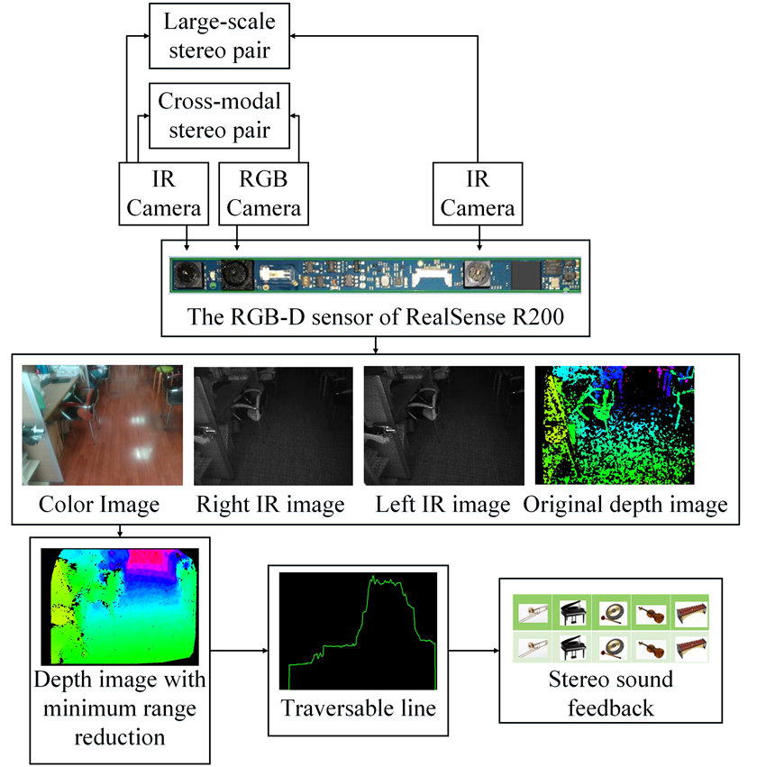 |
K. Yang, K. Wang, H. Chen, J. Bai. Reducing the minimum range of a RGB-depth sensor to aid navigation in visually impaired individuals. Applied Optics, 2018. [Highlighted as an Editors' Pick] [PDF] [BibTex] |

 |
R. Cheng, K. Wang, K. Yang, N. Long, J. Bai, D. Liu. Real-time pedestrian crossing lights detection algorithm for the visually impaired. Multimedia Tools and Applications, 2018. [PDF] [BibTex] [DATA] |
 |
K. Yang, R. Cheng, L.M. Bergasa, E. Romera, K. Wang, N. Long. Intersection perception through real-time semantic segmentation to assist navigation of visually impaired pedestrians. In IEEE International Conference on Robotics and Biomimetics (ROBIO), Kuala Lumpur, Malaysia, December 2018. [PDF] [BibTex] [DATA] [BLOG] |
 |
K. Yang, L.M. Bergasa, E. Romera, J. Wang, K. Wang, E. López. Perception framework of water hazards beyond traversability for real-world navigation assistance systems. In IEEE International Conference on Robotics and Biomimetics (ROBIO), Kuala Lumpur, Malaysia, December 2018. [PDF] [BibTex] [DATA] |
 |
K. Yang, L.M. Bergasa, E. Romera, X. Huang, K. Wang. Predicting polarization beyond semantics for wearable robotics. In IEEE-RAS International Conference on Humanoid Robots (Humanoids), Beijing, China, November 2018. [Spotlight Paper] [PDF] [BibTex] [DATA] [PyTorch] [BLOG] |
 |
J. Wang, K. Yang, W. Hu, K. Wang. An environmental perception and navigational assistance system for visually impaired persons based on semantic stixels and sound interaction. In IEEE International Conference on Systems, Man, and Cybernetics (SMC), Miyazaki, Japan, October 2018. [PDF] [BibTex] [BLOG] |
 |
N. Long, K. Wang, R. Cheng, W. Hu, K. Yang. Low Power Millimeter Wave Radar System for the Visually Impaired. In IET International Radar Conference (IRC), Nanjing, China, October 2018. [Excellent Paper Award] [PDF] [BibTex] [BLOG] |
 |
Y. Ye, K. Wang, W. Hu, K. Yang. Study on the brain mechanisum in visual assistance for the blind. In West-Lake Photonics Symposium (WPS), Hangzhou, China, October 2018. [PDF] |
| 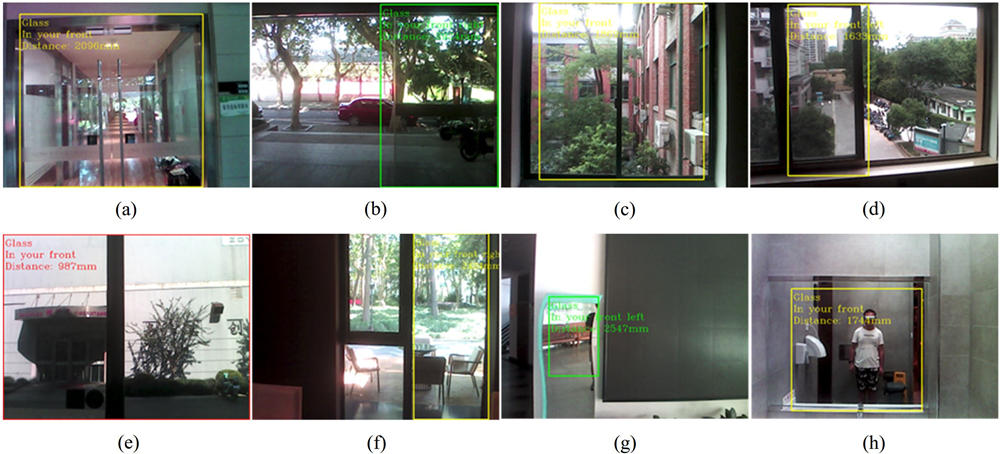 |
Z. Huang, K. Wang, K. Yang, R. Cheng, J. Bai. Glass detection and recognition based on the fusion of ultrasonic sensor and RGB-D sensor for the visually impaired. In West-Lake Photonics Symposium (WPS), Hangzhou, China, October 2018. [PDF] |
 |
N. Long, K. Wang, R. Cheng, K. Yang, W. Hu, J. Bai. Mutiple Target Warning through Millimeter Wave Radar and RGB-Depth Sensors. In West-Lake Photonics Symposium (WPS), Hangzhou, China, October 2018. [PDF] |
 |
K. Yang, L.M. Bergasa, E. Romera, D. Sun, K. Wang, R. Barea. Semantic perception of curbs beyond traversability for real-world navigation assistance systems. In IEEE International Conference on Vehicular Electronics and Safety (ICVES), Madrid, Spain, September 2018. [PDF] [BibTex] [DATA] [BLOG] |
| 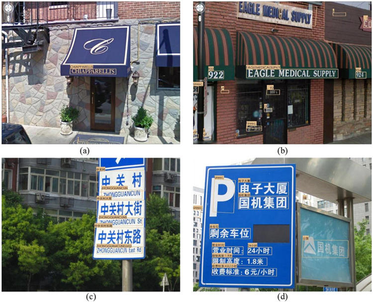 |
L. Fei, K. Wang, S. Lin, K. Yang, R. Cheng and H. Chen. Scene text detection and recognition system for visually impaired people in real world. In SPIE Security + Defence Symposium, Berlin, Germany, September 2018. [Best Student Paper] [PDF] [BibTex] [Presentation] [BLOG] |
 |
N. Long, K. Wang, R. Cheng, K. Yang, J. Bai. Fusion of Millimeter wave Radar and RGB-Depth sensors for assisted navigation of the visually impaired. In SPIE Security + Defence Symposium, Berlin, Germany, September 2018. [PDF] [BibTex] [Presentation] |
| 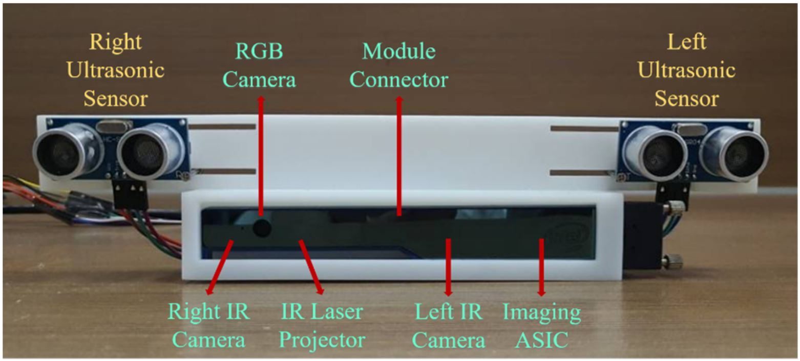 |
Z. Huang, K. Wang, K. Yang, R. Cheng, J. Bai. Glass Detection and Recognition Based on the Fusion of Ultrasonic Sensor and RGB-D Sensor for the Visually Impaired. In SPIE Security + Defence Symposium, Berlin, Germany, September 2018. [PDF] [BibTex] [Presentation] |
 |
R. Cheng, K. Wang, L. Lin, K. Yang. Visual Localization of Key Positions for Visually Impaired People. In International Conference on Pattern Recognition (ICPR), Beijing, China, August 2018. [PDF] [arxiv] [BibTex] [DATA] [CODE] [BLOG] |
 |
S. Lin, K. Wang, K. Yang, R. Cheng. KrNet: A Kinetic Real-time Convolutional Neural Network for Navigational Assistance. In International Conference on Computers Helping People with Special Needs (ICCHP), Linz, Austria, July 2018. [PDF] [BibTex] [BLOG] |
 |
K. Yang, L.M. Bergasa, E. Romera, R. Cheng, T. Chen, K. Wang. Unifying terrain awareness through real-time semantic segmentation. In IEEE Intelligent Vehicles Symposium (IV), Suzhou, China, June 2018. [PDF] [BibTex] [VIDEO] [DATA] [TensorFlow] [PyTorch] [BLOG] |
 |
K. Yang, K. Wang, S. Lin, J. Bai, L.M. Bergasa, R. Arroyo. Long-range Traversability Awareness and Low-lying Obstacle Negotiation with RealSense for the Visually Impaired. In International Conference on Information Science and System (ICISS), Jeju Island, South Korea, April 2018. [PDF] [BibTex] |
 |
H. Chen, K. Wang, K. Yang. Improving RealSense by Fusing Color Stereo Vision and Infrared Stereo Vision for the Visually Impaired. In International Conference on Information Science and System (ICISS), Jeju Island, South Korea, April 2018. [PDF] [BibTex] |
 |
K. Yang, K. Wang, S. Lin, J. Bai, L.M. Bergasa, R. Arroyo. Long-range Traversability Awareness and Low-lying Obstacle Negotiation with RealSense for the Visually Impaired. In International Conference on Frontiers of Image Processing (ICFIP), Barcelona, Spain, March 2018. [Best Paper Award] [PDF] [BLOG] |
 |
H. Chen, K. Wang, K. Yang. Improving RealSense by Fusing Color Stereo Vision and Infrared Stereo Vision for the Visually Impaired. In International Conference on Frontiers of Image Processing (ICFIP), Barcelona, Spain, March 2018. [PDF] |
| 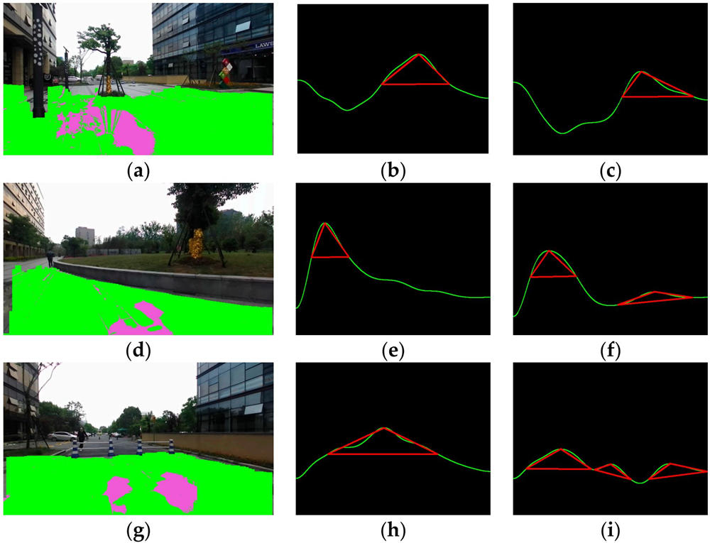 |
K. Yang, K. Wang, R. Cheng, W. Hu, X. Huang, J. Bai. Detecting traversable area and water hazards for the visually impaired with a pRGB-D sensor. Sensors, 2017. [HTML] [PDF] [BibTex] [DATA] |
 |
K. Yang, K. Wang, X. Zhao, R. Cheng, J. Bai, Y. Yang, D. Liu. IR stereo RealSense: Decreasing minimum range of navigational assistance for visually impaired individuals. Journal of Ambient Intelligence and Smart Environments, 2017. [PDF] [BibTex] |
 |
R. Cheng, K. Wang, K. Yang, N. Long, W. Hu, H. Chen, J. Bai, D. Liu. Crosswalk navigation for people with visual impairments on a wearable device. Journal of Electronic Imaging, 2017. [PDF] [BibTex] [DATA] |
 |
X. Huang, J. Bai, K. Wang, Q. Liu, Y. Luo, K. Yang, X. Zhang. Target enhanced 3D reconstruction based on polarization-coded structured light. Optics Express, 2017. [HTML] [PDF] [BibTex] |
 |
K. Yang, K. Wang, W. Hu, J. Bai. Expanding the detection of traversable area with RealSense for the visually impaired. Sensors, 2016. [HTML] [PDF] [BibTex] |
 |
X. Zhao, K. Wang, K. Yang, W. Hu. Unconstrained face detection and recognition based on RGB-D camera for the visually impaired. In International Conference on Graphic and Image Processing (ICGIP), Tokyo, Japan, August 2016. [PDF] [BibTex] |
| 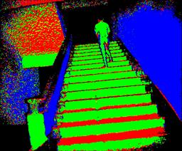 |
K. Yang, K. Wang, R. Cheng, X. Zhu. A new approach of point cloud processing and scene segmentation for guiding the visually impaired. In IET International Conference on Biomedical Image and Signal Processing (ICBISP), Beijing, China, November 2015. [PDF] [BibTex] [BLOG] |
 |
R. Cheng, K. Wang, K. Yang, X. Zhao. A ground and obstacle detection algorithm for the visually impaired. In IET International Conference on Biomedical Image and Signal Processing (ICBISP), Beijing, China, November 2015. [PDF] [BibTex] |